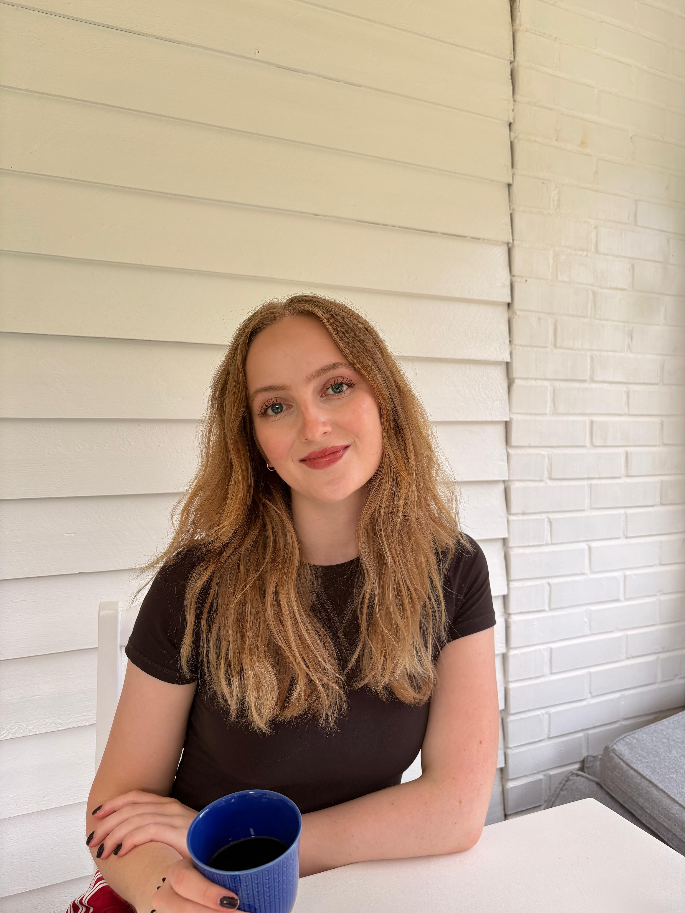

GENZ Magazin, Oper im Splitscreen
Titel und Datum ergänzen
Titel des Projekts einfügen
Kurze Zusammenfassung in ein bis zwei Sätzen, welche Fragestellung der Artikel behandelt und für wen er relevant ist.
Artikel lesenIch studiere Politikwissenschaft an der Universität Hamburg und arbeite als Werkstudentin bei der SPIEGEL Gruppe. Mit jedem Projekt tauche ich tiefer in den Journalismus ein. Ich schreibe als Redakteurin für politikorange, einem Projekt der Jugendpresse Deutschland, und als freie Redakteurin für das GENZ Magazin, herausgegeben von der Landeszentrale für politische Bildung Hamburg.
Mich interessiert, wie sich politische Zusammenhänge mit Daten belegen und erzählen lassen. Für 2027 habe ich bereits ein Praktikum im Bereich Datenjournalismus zugesagt bekommen, auf das ich mich mit eigenen kleinen Projekten wie dieser Seite vorbereite. 2026 habe ich über zwei Landtagswahlen vor Ort berichtet. Stöbert gerne in meinem Portfolio!

Kurze Zusammenfassung in ein bis zwei Sätzen, welche Fragestellung der Artikel behandelt und für wen er relevant ist.
Artikel lesenKurze Zusammenfassung in ein bis zwei Sätzen, worum es in der Story geht und welche Datenquelle verwendet wurde.
Artikel lesenKurze Zusammenfassung der Episode, mit wem gesprochen wurde und welches Thema im Mittelpunkt steht.
Folge anhören